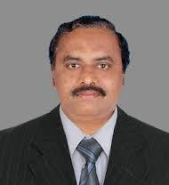

|

Dr. P A Manoharan
Robotics and Automation Society,
IEEE Madras section.
|
I am happy to share my views of proposed International conference on Intelligent Computing and Communication for Smart world (I2C2SW), Dec 14 and 15 2018 organised by Kongu Engineering College(KEC), Perundurai, Tamil Nadu, India. KEC established in 1984, accredited by NAAC certified grade of “A” institution and affiliated an autonomous institution of Anna University, Chennai, KEC offers 14 UG, 19 PG and 16 research programs in Engineering and Applied Sciences.
It is indeed a remarkable KEC contributions to obtain 68th rank, by competing with premiere education institutions like IITs, NITs & Deemed Universities in India for the year 2018 by NIRF, MHRD and Government of India. The Institution is accredited by NBA for most of its UG programs and certified by ISO. It has the unique management structure comprises of around 30 board members and alumnus. Contributions through Industry-Institute Partnership Cell (IIPC) spearheads to organise various faculty development programs for faculty members from all over India. KEC also takes up the consultancy projects through IIPC, which branded a hallmark for its activities among other education, the institutions.
It is gratifying to note that this conference covers a wide range of futuristic technology in the research areas of multi discipline in nature, few research areas like Artificial Intelligence and Machine Learning Biomedical Signal Processing Robotics in Automation and Control, Virtual Reality and Human-Computer Interaction are most essential papers, invited for the presentation. This conference expects technologists, scientists, professionals and researchers to participate and share their knowledge.
Dear researchers, students, faculties and organisers of I2C2SW-2018, it gives me a great pleasure to extend my warm greetings. IEEE has evolved into a big forum for likeminded young people and it has given them an opportunity to participate, discuss, analyze and solve some of the issues related to their novel research work. During this conference, I expect that the researchers will have the technology updates and additions.
On behalf of IEEE Madras section, and my personal behalf, I wish the organisers and participants to make it a successful program. I expect the conference will be a fabulous success and a grand successful event of the year.
|